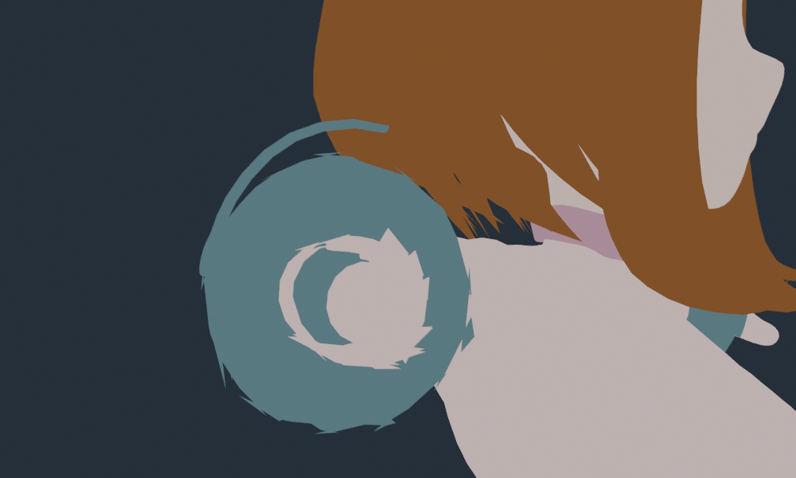
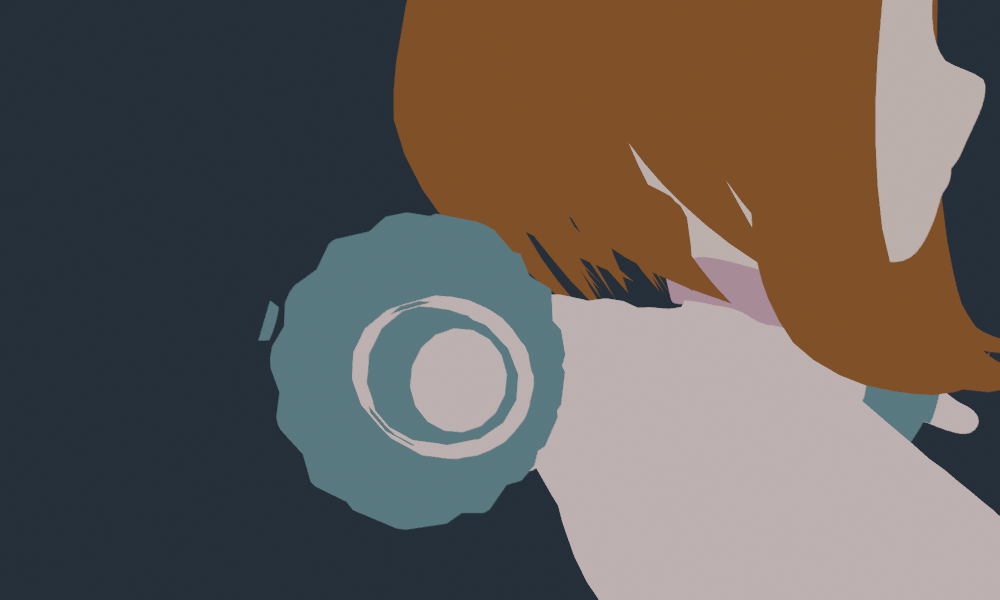
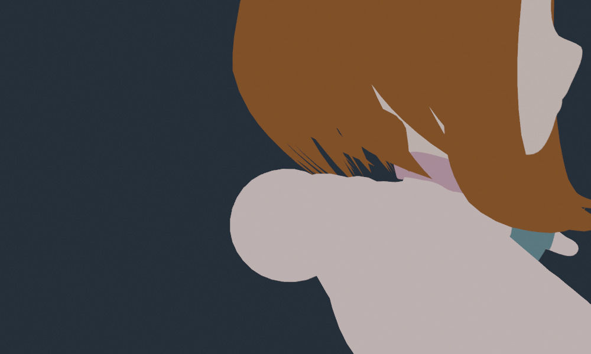

Blender 5.2.2 Workbench · current Uraraka geometry · 239.42 mm apparent lens
All 68,185 vertices and 135,206 triangles retained. No modifiers, custom renderer, pruning, or subdivision. Camera transform and projection match the viewport. Only the native camera’s Clip Start changes below.



The actual clipping plane is reached. At the original distance, 227 triangles cross it. The cut moves when Clip Start changes; teeth remain at the original distance.
No live view or saved-file changes. This confirms clipping behavior; the deformation repair remains open. High-lens flattening remains restored.
Measurements · Test details